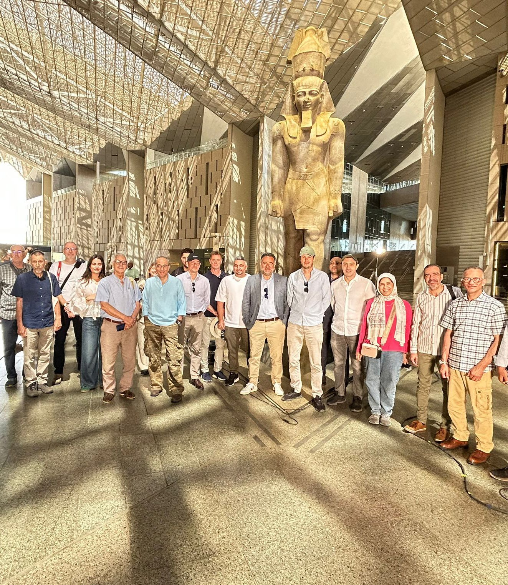
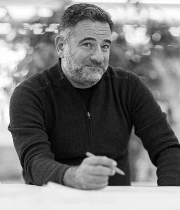

People
Our strength lies in our people: leaders who guide our mission, uphold our values and drive our vision in every region we work.

We value the relationship between people and their environment, and work in partnership with clients who value quality, safety and technical expertise.
Vision
To build lasting cooperation in a spirit of partnership with our clients, adding value to their objectives through the quality of our work.
Mission
To meet every challenge with safe, reliable and innovative solutions, and to trust our skilled, multi-local teams to deliver sustainable development for our company and the communities where we work.
Values
Core values built on integrity, giving us an ethical and responsible framework for every project and every partnership.

Prof. Abdallah Abdel Aziz Attia
A visionary in shaping the urban fabric of the MENA region. He founded PUD on the synergy between people and their natural and cultural environments, pioneered an architectural style rooted in local tradition and social responsibility — introducing the “cubed house” model — and left an enduring impact on both the built environment and academia.
He developed a new urban style tailored to local places and affordable housing — including his pioneering concept of cubed houses, still popular today — and shaped how planning and architecture are taught in Egyptian universities.

Prof. Dr. Amr Abdalla Abdelaziz Attia
Visionary urban planner and sustainable tourism development ambassador, blending over 30 years of academic and industry experience. As CEO of PUD Consultants and a Professor of Urban Planning at Ain Shams University, he drives innovative, sustainable urban development across the Middle East.
Formerly a Principal Director at AECOM, he has led award-winning projects and co-chaired global forums on livability and urban design. He is known for advancing smart cities, affordable housing and inclusive growth, and founded PUD Saudi in 2018.
Current roles
- Professor of Architecture & Urban Planning, Ain Shams University, Cairo
- Principal and Managing Partner, PUD Consultants (Cairo – Riyadh – Dubai)
- Board Member, Society of Egyptian Architects (SEA)
- Vice President, NAGA Architects
- Eisenhower Fellow, 2007
Previously
- Vice President, Strategic Development, MEA, WATG
- Principal Director, Design, Planning + Economics, AECOM
- Managing Director, Consultancy Unit for Planning & Urban Design, Ain Shams University
- Technical Committee Member, Grand Egyptian Museum
Key staff
The permanent core driving PUD’s long-term vision, ensuring continuity, strategic leadership and quality from advisory orchestration to delivery.
Our strategic partners
A collaborative consultants’ network that brings finance, engineering, law and sustainability expertise to every engagement.
Dr. Amro Taibah
- PhD, Urban and Regional Science
- MSc, Construction Management
Waleed Shaalan
- B.Arch
- LEED Green Associate
Joanna M. Esty
- JD, University of Maryland School of Law
- MBA, Pepperdine University
- BSc Chemical Engineering, Georgia Tech
Abdel Nasser Taha
- BSc Architecture
- MBA (IPE France): strategic planning, risk and change management
Sherif Saleh
- MBA, Financial Risk Management
- MSc Project Management
- BSc Civil Engineering
Specialists we call on
Dr. Tamer Elshayal
- PhD Urban Planning and MDes Urbanism, Landscape, Ecology, Harvard University
- MLA with highest honours, Anhalt University
Dr. Abdullah Ghazal
- Hohenheim University, Stuttgart
- MSc Horticulture, University of Aleppo
Maha El Nahas
- BSc Environmental Design, University of Oklahoma
- BIA competition winner: passive-solar hotel design
Ahmed Youssef
- BEng, MBA
- EUREM-certified energy manager
Shady Fayed
- MSc Real Estate, NYU Schack Institute
- MSt Interdisciplinary Design for the Built Environment, University of Cambridge
- BSc Mechanical Engineering, AUC
“We don’t just gather experts. We orchestrate brilliance… matching minds to missions, and context to calibre.”
Strategic project steering
Lead guides in major urban initiatives, setting direction and transformation paths.
High-profile advisory boards
Decoding complex challenges and offering contextualised counsel to decision-makers.
Competition juries
Cross-disciplinary evaluation, as in the Al Rabita Design Competition, Makkah.
Experts who have served on PUD-led panels

People-driven. Extraordinary results.
Our strategy is built on evolution, flexibility and focus. Clients and partners count on us to anticipate their needs and deliver creative solutions, to manage resources wisely and to contribute to a better quality of life. Our people are critical to our success, and we reward success by creating opportunities to achieve the extraordinary.
Join our community